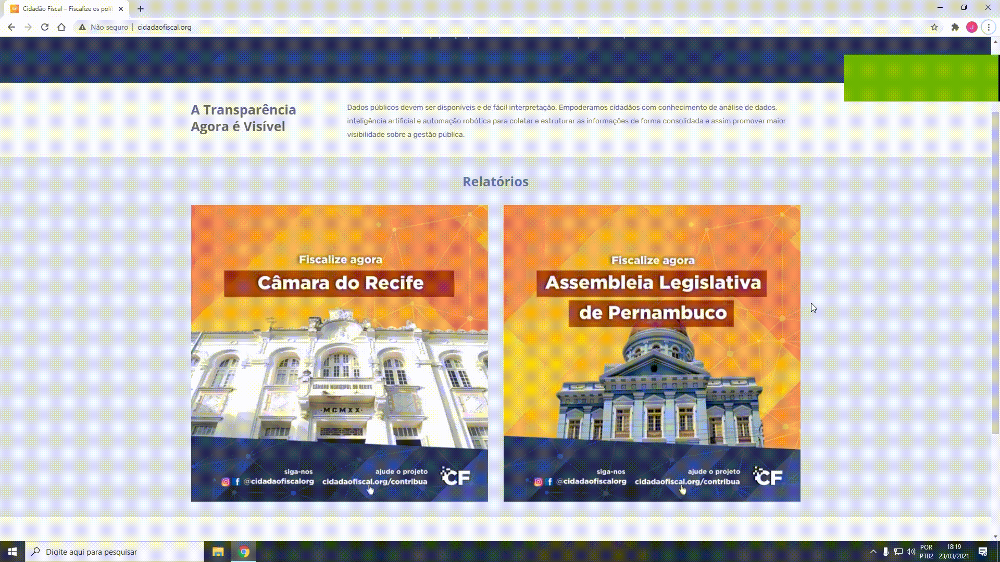
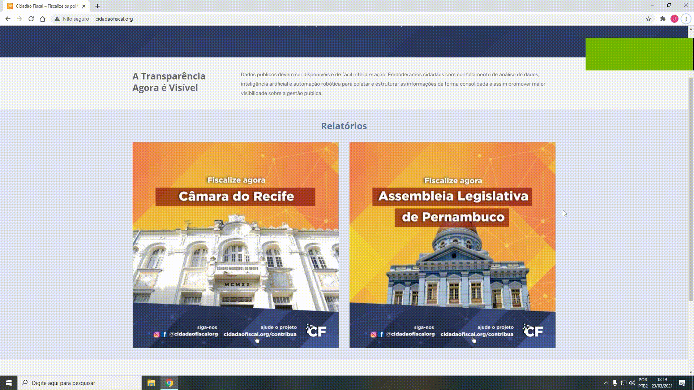

Sales forecasting solution where I deployed an application for predicting sales for rossmann drugstore. The Rossmann CEO can access predictions using a bot on Telegram
Github

Learning to rank solution where I predict whether a client of a health insurance is interested in buying a car insurance. I created an API that can be called within google sheets
Github
I created an python script to scrape Pernambuco's government spending data and deployed a dashboard with PowerBI Service so people can audit government spending more clearly
Learn more 
